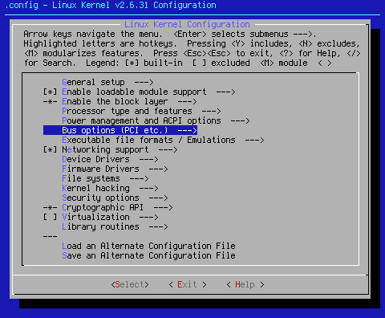
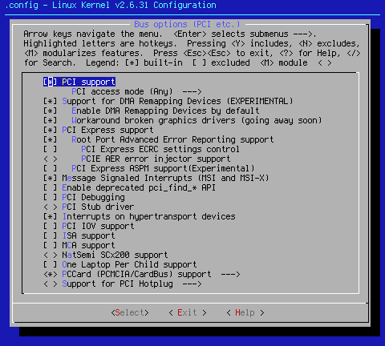
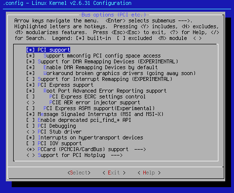

Custom Search
This page is going to specifically cover Bus options (PCI etc.) --->.

Arrow key down to the area shown. When you hit <Select> at this point, you will bring up one of two pages, depending on whether you're running x86 or x86_64:

x86

x86_64
[*] PCI support
If your computer has a PCI bus, this is a must have setting. Simply put, without this setting, there is no kernel access to the PCI bus. Since every computer from the Pentium on has a PCI bus, this setting defaults to on.
x86 PCI access mode (Any) --->
When you <Select> this option, you get the following sub-options:
( ) BIOS
( ) MMConfig
( ) Direct
(X) Any
According to my reading of information on the PCI bus, (*) Any is the best option, especially if you have PCI express devices. This option defaults to (*) Any.
x86_64 [*] Support mmconfig PCI config space access
Once again, according to my reading, this is best turned on, especially if you have PCI express devices. This setting defaults to on.
[*] Support for DMA Remapping Devices (EXPERIMENTAL)
This setting gets turned on when [*] Message Signaled Interrupts (MSI and MSI-X) is turned on. Since it appears that this can cause kernel panics with certain devices, this setting will be defaulted to off with the next seed settings iteration. If you experience unexplained kernel panics, turn this setting off. This setting defaults to on.
[*] Enable DMA Remapping Devices by default
This setting also gets turned on when [*] Message Signaled Interrupts (MSI and MSI-X) is turned on. For the same reasons listed above, this setting will default to off in the next seed settings iteration. This setting defaults to on.
[*] Workaround broken graphics drivers (going away soon)
This setting also gets turned on when [*] Message Signaled Interrupts (MSI and MSI-X) is turned on. This setting currently defaults to on. Since many of the above listed problems concern graphics drivers, and since this setting is, "going away soon", it will be turned off in the next seed settings iteration. This setting defaults to on.
x86_64 [ ] Support for Interrupt Remapping (EXPERIMENTAL)
This is the final setting that also gets turned on when [*] Message Signaled Interrupts (MSI and MSI-X) is turned on. This can actually be a good thing, especially if you don't have a lot of interrupts in the first place. Change this setting if you have troublesome IRQ conflicts. This setting defaults to off.
[*] PCI Express support
If you are running any PCI express (PCI-E) devices, this is a must have setting. The command lspci -n will let you know if you have any PCI-E devices. If so, this setting has to be turned on. If you don't have PCI-E devices, this setting can be turned off with no ill effects. This setting defaults to on.
[*] Root Port Advanced Error Reporting support
PCI-Express Advanced Error Reporting provides more robust error reporting. This setting is turned on in case there are any PCI-E issues. They will show up in /var/log/dmesg. Because it's an tool in my personal troubleshooting arsenal, this setting defaults to on.
[ ] PCI Express ECRC settings control
According to < Help >,"Used to override firmware/bios settings for PCI Express ECRC (transaction layer end-to-end CRC checking)." Since this isn't something I want to do, and because < Help > tells me it's best not to turn it on, this setting defaults to off.
< > PCIE AER error injector support
This setting allows you to troubleshoot PCI-E AER code. This is way out of the scope of the kernel seed's job. This setting defaults to off.
[ ] PCI Express ASPM support(Experimental)
According to < Help >," This enables PCI Express ASPM (Active State Power Management) and Clock Power Management. ASPM supports state L0/L0s/L1."
Since kernel seeds are set to run as fast as possible, it stands to reason I wouldn't turn this setting on. However, for those who like long laptop battery life, and who have PCI-E devices in said laptop, this is a good setting to turn on. This setting defaults to off.[*] Message Signaled Interrupts (MSI and MSI-X)
While some of the sub-settings that get turned on can be troublesome, MSI is actually a good thing for speed. According to this article, "PCI Express endpoints uses INTx emulation (in-band messages) instead of IRQ pin assertion. Using INTx emulation requires interrupt sharing among devices connected to the same node (PCI bridge) while MSI is unique (non-shared) and does not require BIOS configuration support. As a result, the PCI Express technology requires MSI support for better interrupt performance."
Better performance is a good thing in the context of the kernel seed. Since every modern PC has at least one PCI-E device, this is a must have.This setting defaults to on.
[ ] Enable deprecated pci_find_* API
This setting should only be turned on if you have an older driver that requires this. Since this setting is only used for a few, rare case issues, it defaults to off.
[ ] PCI Debugging
Use this setting if you have PCI issues, and wish to add more troubleshooting message to the system log. This setting defaults to off.
< > PCI Stub driver
According to < Help >,"Say Y or M here if you want be able to reserve a PCI device when it is going to be assigned to a guest operating system. Since I don't support this, this setting defaults to off.
[*] Interrupts on hypertransport devices
This setting is mostly for AMD chips and their chipsets. It is turned on as a courtesy, since I saw many AMD .configs without it, even as lspci -n told me that the system had these devices. Intel chip users can turn this off or leave it as is without ill effect. This setting defaults to on.
[ ] PCI IOV support
According to < Help >,"I/O Virtualization is a PCI feature supported by some devices which allows them to create virtual devices which share their physical resources. If you're working with virtualization, this is a good setting to have. Since the seeds don't support virtualization, this setting defaults to off.
x86 [ ] ISA support
Turn this setting on if your machine still has an ISA bus with ISA devices attached. Turning this setting on also enables certain ISA device drivers (mostly sound and net), which can be selected at other places in the kernel. Since most modern computers no longer have ISA slots, this setting defaults to off.
x86 [ ] MCA support
If you are one of the unlucky few who still owns an IBM PS/2 with Microchannel Architecture, I salute you for the devotion, and expense implied in keeping those old dinosaurs humming along. Since there are few MCA machines left in the world, this setting defaults to off.
x86 < > NatSemi SCx200 support
This driver provides basic support for Geode processors. If you have one, turn this setting on. This setting defaults to off.
x86 [ ] One Laptop Per Child support
This setting turns on support for the kernel to detect with OLPC hardware's unique features. If this is you, turn this setting on. This setting defaults to off.
<*> PCCard (PCMCIA/CardBus) support --->
If your computer has a PCMCIA/CardBus interface, this is a must have setting. When you hit <Select>, the following sub-settings open:
--- PCCard (PCMCIA/CardBus) support
[ ] Enable PCCARD debugging
< > 16-bit PCMCIA support
-*- 32-bit CardBus support
*** PC-card bridges ***
<*> CardBus yenta-compatible bridge support
[ ] Enable PCCARD debugging
This setting allows for lots of PCMCIA/CardBus debugging messages to be generated. If you are having issues with these devices/busses, turn this setting on. This setting defaults to off.
< > 16-bit PCMCIA support
PCMCIA devices are no longer made. If you have a modern laptop, it's running a cardbus, not a PCMCIA interface. If you have an older machine that supports a true PCMCIA interface, turn it on. This setting defaults to off.
-*- 32-bit CardBus support
This setting gets hard wired into the kernel when you enable <*> CardBus yenta-compatible bridge support.
<*> CardBus yenta-compatible bridge support
This is the setting to use for all modern laptops with CardBus slots. That's all the laptops at Fry's as of this writing that have slots. If you want your CardBus devices to work, this is a must have setting. This setting defaults to on.
One further note; this whole group of settings is turned on as a courtesy to laptop owners. From the original make defconfig, it takes five clicks of the mouse to set this driver up properly. I figure it's easier to and better quality wise to set this up properly, and let those without just exercise their right to turn this setting off with a single click.
< Exit > out of this area, and go to the final configuration setting for this page:
< > Support for PCI Hotplug --->
When you hit <Select>, the following sub-settings open:--- Support for PCI Hotplug
< > Fake PCI Hotplug driver (NEW)
< > Compaq PCI Hotplug driver (NEW)
< > IBM PCI Hotplug driver (NEW)
< > ACPI PCI Hotplug driver (NEW)
[ ] CompactPCI Hotplug driver (NEW)
< > SHPC PCI Hotplug driver (NEW)
These settings are for exotic machinery; blade servers, and the like. For this subsystem to work, there are also required userspace tools. If you have machines of this sort, then turn this on. These settings default to off, and are not required by standard desktop/laptop systems.
End of page 5
Cheers,
Pappy